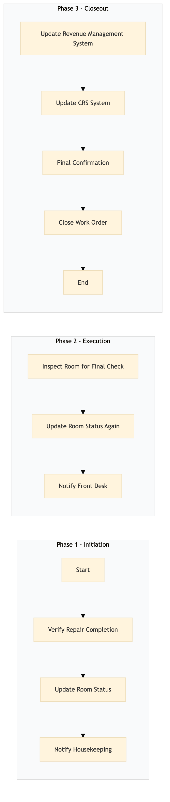

| Role | Steps |
|---|---|
| Facilities Engineer | 1.1 1.2 1.3 |
| Executive Housekeeper | 2.1 2.2 2.3 |
| Revenue Manager | 3.1 3.2 |
| Front Desk Agent | 3.3 |
| Step | Name | Role | System | Input | Output | KPI | Dec? | Exc? | Pain Point / Risk |
|---|---|---|---|---|---|---|---|---|---|
| 1.1 | Verify Repair Completion | Facilities Engineer | Oracle OPERA Cloud | Work Order Completion Report | Verified Repair Checklist | Less than 5 minutes | N | Y | Inconsistent documentation of repair steps |
| 1.2 | Update Room Status | Facilities Engineer | Oracle OPERA Cloud | Verified Repair Checklist | Updated Room Status in PMS | Less than 3 minutes | N | Y | Room status not updating automatically |
| 1.3 | Notify Housekeeping | Facilities Engineer | Oracle OPERA Cloud | Updated Room Status in PMS | Notification to Housekeeping Team | Less than 2 minutes | N | Y | Delayed communication between departments |
| 2.1 | Inspect Room for Final Check | Executive Housekeeper | Oracle OPERA Cloud | Notification to Housekeeping Team | Final Inspection Report | Less than 10 minutes | Y | N | Inadequate room inspection protocols |
| 2.2 | Update Room Status Again | Executive Housekeeper | Oracle OPERA Cloud | Final Inspection Report | Updated Room Status in PMS | Less than 3 minutes | N | Y | Room status not updating automatically |
| 2.3 | Notify Front Desk | Executive Housekeeper | Oracle OPERA Cloud | Updated Room Status in PMS | Notification to Front Desk Team | Less than 2 minutes | N | Y | Delayed communication between departments |
| 3.1 | Update Revenue Management System | Revenue Manager | IDeaS G3 RMS | Notification to Front Desk Team | Updated Room Availability in RMS | Less than 5 minutes | N | Y | Inaccurate room availability updates |
| 3.2 | Update CRS System | Revenue Manager | SynXis CRS | Updated Room Availability in RMS | Updated Room Availability in CRS | Less than 5 minutes | N | Y | Synchronization issues between CRS and RMS |
| 3.3 | Final Confirmation | Front Desk Agent | Oracle OPERA Cloud | Updated Room Availability in CRS | Confirmation of Room Return to Service | Less than 2 minutes | N | Y | Room status not reflecting in CRS |
| 3.4 | Close Work Order | Facilities Engineer | Oracle OPERA Cloud | Confirmation of Room Return to Service | Closed Work Order | Less than 2 minutes | N | Y | Work orders not closing automatically |
This process outlines the steps involved in completing a repair and returning a room to service at a full-service Marriott hotel using Oracle OPERA Cloud PMS.